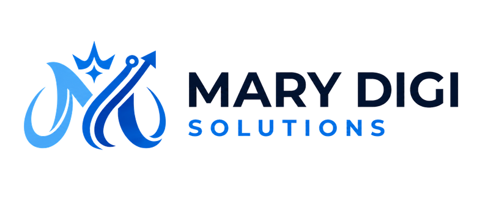

Make the first impression count.
Give people a clear view of your firm, your expertise, and how to start a conversation.

FOR INSURANCE & CPA FIRMSTHE DIGITAL PARTNER FOR INSURANCE & CPA FIRMS
Your expertise deserves a connected experience. MDS brings your website, CRM, automation, and content together—from the first impression to the next conversation.
Book a Discovery Call with MDS See what happens after “hello”YOUR WEBSITE. YOUR WORKFLOW. YOUR CONTENT.
WORKING TOGETHER, WITH MDS.
A credible website makes your expertise clear—and gives visitors a thoughtful way to get in touch.
Illustrative design · Fictional firm and contact · No live activity
THE OPPORTUNITY
A referral checks your website. A business owner asks about a coverage review or accounting support. Another inquiry arrives while your team is busy.
MDS connects the website, content, and operating tools so your team can carry those conversations forward.
Give people a clear view of your firm, your expertise, and how to start a conversation.
Connect website inquiries to an organized contact record, a clear owner, and an agreed next step.
Support your team with timely follow-up and a booking path that fits the way your firm works.
THE CONNECTED EXPERIENCE
Explore how a connected system can turn a first hello into a more organized conversation.
ILLUSTRATIVE WORKFLOW · FICTIONAL DATA
A focused inquiry form captures what the visitor needs, without overwhelming them with questions.
Select a stage to explore. This is a concept, not a live contact or appointment.
YOUR MDS TEAM, CONNECTED
Design, systems, and creative support. A practical team behind the experience you want to deliver.
A clear, credible home for your expertise. We build responsive websites and funnels that explain your services and make the next step easy to find.
Expertise.
With a human touch.
Fictional firm · Design concept, not a client case study
Contact fields, pipeline stages, and clear ownership keep the context with the inquiry.
We configure GoHighLevel and connect the tools behind your client journey. Your team gets a practical process for inquiries, appointments, and follow-up.
Make your message easier to see, understand, and remember. Our team supports content planning, social media, branded graphics, and video editing.
Content themes and post planning aligned with your firm’s services.
Turn approved footage into polished edits, captions, and branded visuals.
Agreed publishing support with a clear route back to your website or inquiry page.
DESIGN, WITH A LITTLE CHARACTER
A consistent visual identity helps people recognize your firm. We carry your approved brand across website graphics, social posts, and edited video.
From a service explainer to a branded post.
Creative support with a clear business purpose.
Websites and funnels that turn a first impression into a clear next step.
↗SUPPORT BEHIND THE SCENES
Prospect research, organized lead lists, and outreach-system preparation to support your team’s sales activity.
Agreed scheduling, documentation, reporting, and operational support that help keep everyday work organized.
We agree on the services, access, responsibilities, and deliverables before the build. MDS provides digital and operational support—not insurance, tax, or accounting advice.
HOW WE WORK
A collaborative process, with decisions and handoffs you can follow.
Review your audience, current setup, and the moments that need attention.
Agree on the message, visual direction, page flow, and project scope.
Build the pages and connect the approved forms, CRM, and booking flow.
Check the full journey, document the setup, and walk your team through it.
A FEW THINGS TO KNOW
Both. MDS builds digital experiences for insurance and accounting professionals with shared needs around trust, inquiries, follow-up, and scheduling. Your project is tailored to your firm’s services and operating process.
We first review what you already use. Where practical, we improve and connect the current setup. Any migration or replacement is discussed before it becomes part of the scope.
Your business goals, current tools, inquiry process, and project priorities. The conversation helps identify a suitable scope and the access or decisions needed for the next step.
Yes. Content templates, social graphics, video editing, and campaign assets can be included in the agreed scope. Your firm reviews industry-specific language and professional claims.
Timing depends on the pages, integrations, content, and approval process. We agree on a delivery plan after reviewing those requirements.
LET’S BUILD THE CONNECTION
Tell us a little about your firm. Then share your priorities so we can shape a useful discovery conversation.
DESIGN PREVIEW
Use sample details to explore this preview. Nothing is sent to MDS and no call is booked.
Required fields marked *. Details are kept only in this browser tab for the preview.